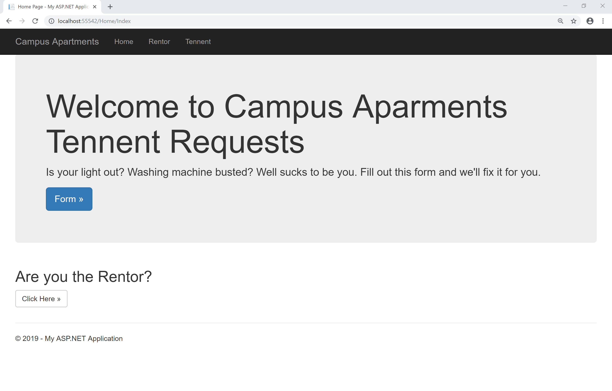
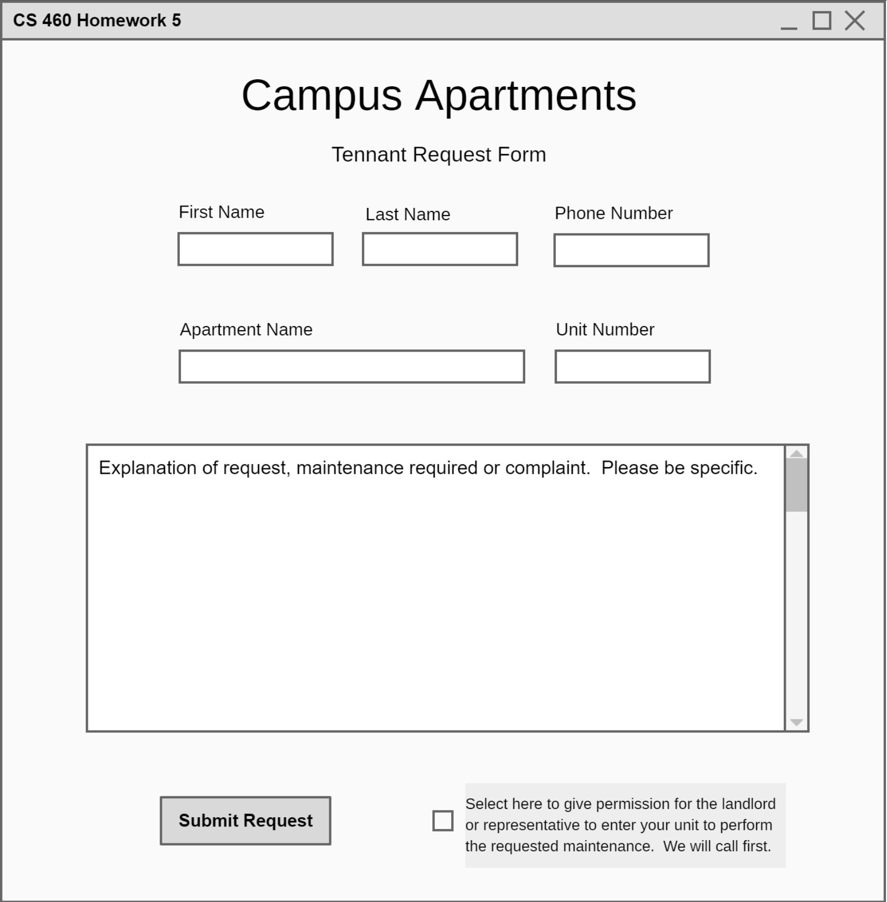
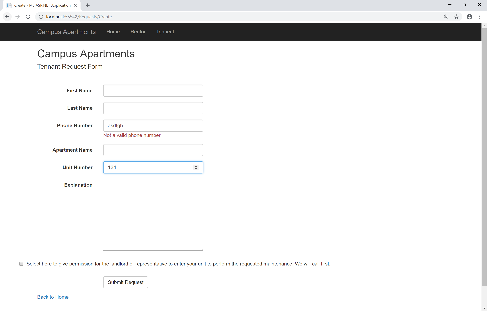
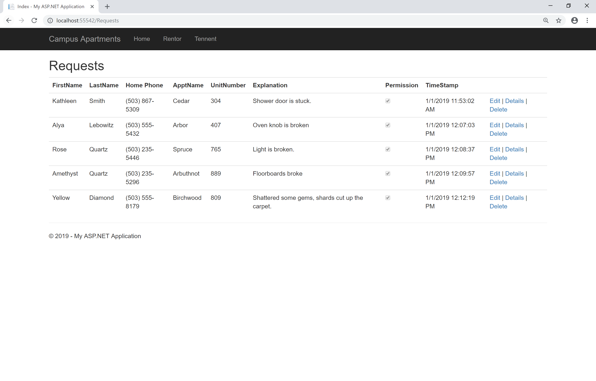

Homework 5 Blog
Question 1
[Setup] Begin by creating a new empty MVC project in your repository. Create a simple home landing page that will serve as the home page for this app. Put links here for pages you create later.
Solution

Question 2
[Planning & Design] What do you do when your refrigerator stops working? If you're lucky enough to be living in Campus Apartments then you can simply go to your landlord's website and submit a request for maintenance. Explain what is wrong and voila, your super responsive and caring building manager will come running to fix or replace it.
We want to make an online version of this form for renters plus a page for the building manager. So two pages (in addition to the home landing page): one for renters to fill out and submit this form, and another for the building manager to view all current requests, sorted by date and time submitted. The following questions suggest how you should go about this.
Include everything you see in the form. All inputs are required and can't be empty strings. The phone number must be in a valid phone number format. The Unit number must be an integer (yes I know apartment numbers frequently appear like '7B'). I count 7 form input elements. You'll also need to timestamp these requests, but you should do that server-side (why?).
Styling is up to you.
Solution
 Question 3
[Content/Coding] Start with the data model: design and create the database, which will have only a single table that uses an integer primary key. Use appropriate data types for the data fields in the form plus the timestamp and anything else you want to store. Use the scripts from the example in lecture to create the database and populate it with a few example entries. This means you'll have one script to create the table and populate, or seed, it with at least 5 entries (up.sql) and a separate script to clear it all away (down.sql). Both of these need to be in your App_Data folder and need to be in your Git repository.
You can create the database using SQL Server, SQL Server Express or LocalDB. The first two of these require a separate installation. LocalDB comes with Visual Studio, provided you installed the data storage and processing workload when installing VS, and can be accessed through the Server Explorer tab. For now the database is local to your machine. Anyone wanting to duplicate your project from your Git repository would have to manually create the database, run your up script on it and then edit the connection string.
Solution
Question 4
[Content/Coding] Create the model class and the database context class: manually write the model class and the db context class. The model should go in the Models folder while the context class should go in a new folder called DAL, for Data Access Layer. This is a common pattern to use when separating the data layer from your data processing layer and is also the pattern used in the Pro MVC book.
Solution
Question 5
[Content/Coding] Connect your MVC app to the database: add the correct connection string to Web.config. Can your code access the 5 seeded requests in the database?
Solution
Question 6
[Content/Coding] Create controller and action methods. Use the GET-POST-Redirect pattern for the create functionality (aka Post/Redirect/Get). For viewing current requests you'll make what is commonly referred to as a list view.
In the next section you'll create strongly typed views. This means you're passing an instance of a Model class back and forth between the controller action method and the views. So you're definitely NOT using the Request object or FormCollection to get the form values as you did in HW 4.
Solution
Question 7
[Content/Coding] Create strongly typed views. Then write Razor code to create the UI as you wish. You'll need a minimum of two pages: one to fill out and submit a new request and another page to view all requests (show them in a table, sorted in oldest-first order by timestamp, to the minute or better). The look and feel of the site is up to you.
You should write the views yourself for maximum learning and understanding. Sure, take a look at some scaffolded code as examples but then write it yourself. Plus, the scaffolded views look pretty dismal.
Solution
Question 8
[Testing] Demo your site: fill out the form, click a button to submit, then be taken to either a thank you page or a page showing all current requests, including the one just entered. Make sure validation works. The very first time you view requests you should see the 5 examples that you seeded your db with, and then the requests will just build up as you enter new ones.
Hey, now's a great time to make a 1-2 minute video to link to in your Portfolio!
Solution
Check out the project!
Check out the code!
The code is in my github repository, see it here: